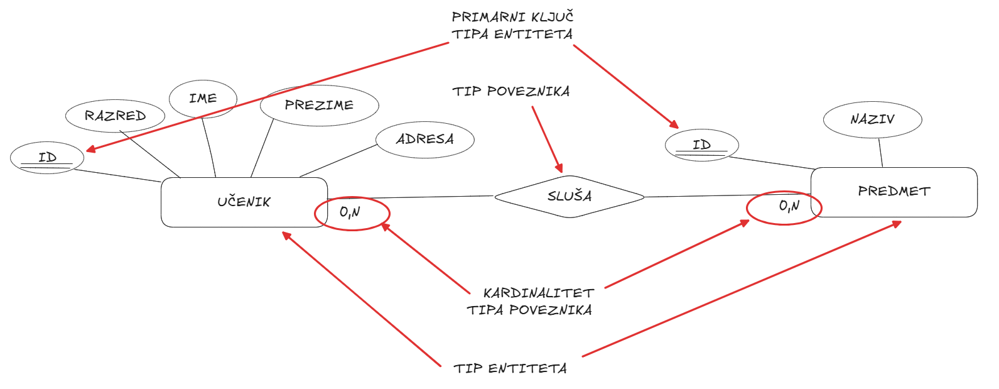

Kardinalnost i opcionalnost
Povezivanje sa prethodnom lekcijom
U prethodnoj lekciji upoznali smo različite tipove relacija između entiteta i videli kako entiteti mogu biti povezani na načine kao što su 1:1, 1:N i N:M. Naučili smo da ove relacije opisuju koliko pojava jednog tipa entiteta može biti povezana sa pojavama drugog tipa entiteta.
Sada ćemo napraviti sledeći korak i dodatno precizirati te veze uvođenjem pojmova kardinalnosti i opcionalnosti.
Uvod kroz pitanje i problem
Kada govorimo o relacijama, nije dovoljno reći da postoji veza između dva tipa entiteta. Potrebno je precizno definisati koliko pojava jednog tipa entiteta može ili mora biti povezano sa pojavama drugog tipa entiteta.
Kako znamo da li neka veza mora da postoji ili može da izostane?
Šta je kardinalnost
Kardinalnost određuje maksimalan broj veza između pojava dva tipa entiteta.
Na primer, u informacionom sistemu za školu, jedna pojava tipa entiteta Profesor može biti povezana sa više pojava tipa entiteta Predmet. To znači da je maksimalan broj veza veći od jedan.
Sa druge strane, svaka pojava tipa entiteta Predmet može biti povezana sa jednom pojavom tipa entiteta Profesor, ako pretpostavimo da jedan predmet predaje samo jedan profesor.
Na ovaj način kardinalnost precizira ono što smo ranije opisivali kao 1:1, 1:N ili N:M.
Šta je opcionalnost
Pored maksimalnog broja veza, postoji još jedan važan aspekt koji moramo uzeti u obzir, a to je minimalan broj veza. Ovde dolazimo do pojma opcionalnosti.
Opcionalnost opisuje da li je veza obavezna ili ne. Drugim rečima, odgovara na pitanje: da li pojava jednog tipa entiteta mora biti povezana sa pojavom drugog tipa entiteta ili ta veza može i da ne postoji?
Ako je minimalan broj veza nula, kažemo da je veza opciona. To znači da pojava jednog tipa entiteta može postojati bez veze sa drugim tipom entiteta.
Na primer, u informacionom sistemu za školu možemo imati pojavu tipa entiteta Učenik koji još uvek nema nijednu ocenu. U tom slučaju, veza između učenika i ocene je opciona sa strane učenika.
Sa druge strane, ako je minimalan broj veza jedan, veza je obavezna. To znači da svaka pojava jednog tipa entiteta mora imati vezu sa pojavom drugog tipa entiteta.
Na primer, možemo pretpostaviti da svaka pojava tipa entiteta Ocena mora biti povezana sa tačno jednom pojavom tipa entiteta Učenik. Ocena ne može postojati sama za sebe, već uvek mora pripadati nekom učeniku.
Razmišljanje iz oba smera relacije
Važno je da uvek razmišljamo iz oba smera relacije.
Razmotrimo vezu između tipa entiteta Učenik i tipa entiteta Predmet.
Jedna pojava tipa entiteta Učenik može biti povezana sa više pojava tipa entiteta Predmet, jer učenik sluša više predmeta.
Sa druge strane, jedna pojava tipa entiteta Predmet može biti povezana sa više pojava tipa entiteta Učenik, jer jedan predmet pohađa više učenika.
Kada razmišljamo o minimalnom broju veza, možemo reći da učenik može postojati i bez predmeta u određenom trenutku, kao i da predmet može postojati i bez učenika. U tom slučaju, veza je opciona sa obe strane.
Kombinovanje minimuma i maksimuma
Kombinovanjem minimalnog i maksimalnog broja veza dobijamo potpun opis relacije.
Na primer, možemo reći da jedna pojava tipa entiteta Profesor može biti povezana sa nula ili više pojava tipa entiteta Predmet. To znači da profesor može, ali ne mora predavati predmet.
Sa druge strane, jedna pojava tipa entiteta Predmet mora biti povezana sa tačno jednom pojavom tipa entiteta Profesor, ako želimo da svaki predmet ima svog profesora.
| Relacija |
Strana A (min, max) |
Strana B (min, max) |
| Profesor - Predmet |
Profesor: (0, N) |
Predmet: (1, 1) |
| Učenik - Ocena |
Učenik: (0, N) |
Ocena: (1, 1) |
| Učenik - Predmet |
Učenik: (0, N) |
Predmet: (0, N) |

Podsticanje razmišljanja
Šta bi se desilo ako bismo razmatrali samo maksimalan broj veza, a zanemarili minimalan?
Kako bismo ovo rešili kada sistem kaže da predmet mora imati profesora, ali profesor ne mora odmah imati predmet?
Da li svaka relacija u školskom sistemu mora biti obavezna sa obe strane?
Učenici često prave grešku tako što razmatraju samo maksimalan broj veza i zanemaruju minimalan. Na primer, kažu da je relacija jedan prema više, ali ne razmišljaju o tome da li je veza obavezna ili opciona. Međutim, ova informacija je veoma važna jer utiče na to kako ćemo kasnije implementirati bazu podataka.
Kako lakše odrediti kardinalnost i opcionalnost
Ako ti je teško da razumeš kardinalnost i opcionalnost, pokušaj da za svaku relaciju postaviš dva pitanja: koliko najviše pojava jednog tipa entiteta može biti povezano sa jednom pojavom drugog tipa entiteta i da li ta veza mora postojati ili može izostati.
Odgovori na ova pitanja daće ti kompletan opis relacije.
Najava sledeće lekcije
Razumevanje kardinalnosti i opcionalnosti nam omogućava da precizno modelujemo realne sisteme. Na taj način izbegavamo nejasnoće i pravimo kvalitetniji model baze podataka koji verno odražava pravila sistema.
U narednoj lekciji ćemo sve što smo do sada naučili primeniti u praksi i pokušati da napravimo kompletan ER dijagram za informacioni sistem za školu.
Za informacioni sistem za školu razmotri sledeće relacije:
Učenik i Ocena
Profesor i Predmet
Za svaku relaciju napiši:
maksimalan broj veza sa obe strane
minimalan broj veza sa obe strane
objasni da li je veza obavezna ili opciona i zašto
Pokušaj da precizno objasniš da li pojava jednog tipa entiteta mora imati ili može imati vezu sa pojavom drugog tipa entiteta.